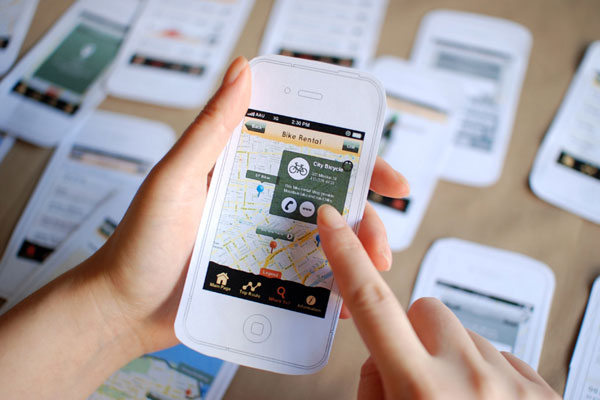

User testing is one of the most important steps in user experience (UX) designing. This is a technique to discover any problems that a design might have. A designer can be blind to these problems, and the eye of a stranger could solve them all. Once a product is ready to be tested, a user can give their feedback about how they experience the design. There are many different types of user testing. For example, there is moderated tests. A moderator can help probe the user that is participating in the test to delve deeper into the product. This can cause the user to create more data that is more complete, and it keeps them more on track and less confused. The moderator is there to help the user stay on the right path. A user's immediate reactions can tell a designer a lot about the design. Body language and first impressions are things that a designer cannot experience themselves. User testing can also help with the development process. If there are any paths that are confusing or locations that are not reachable, a designer can change this. If a user is taught exactly what to look for, this could highly impact the way a product is finalized.
